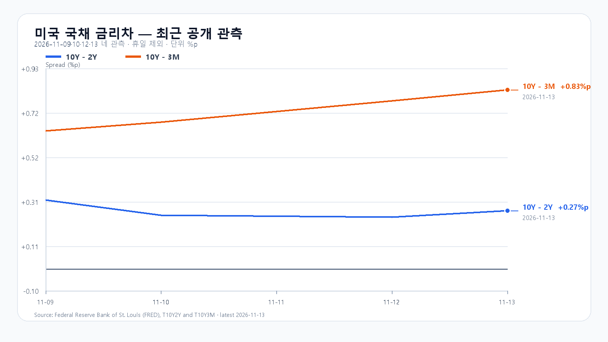

미국 반도체주의 매도가 Nvidia 경쟁사로도 번졌습니다. 금요일 반등을 지키지 못한 코스피에는 부담스러운 출발입니다. 이번 주 Nvidia 실적을 기다리는 동안 5,200 지지와 외국인·프로그램 매수 회복을 먼저 봐야 합니다.
경쟁사로 옮겨갔던 매수도 흔들렸다
13일 미국 정규장에서 AMD는 8.75%, Broadcom은 4.76%, Micron은 2.52%, Nvidia는 2.01% 하락했습니다. SOXX는 3.67%, SMH는 2.99% 내렸고 QQQ와 TQQQ는 각각 1.20%, 3.67% 하락했습니다. 목요일의 종목별 차별화가 금요일에는 업종 전반의 매도로 바뀌었습니다. 한국장 마감 뒤의 추가 하락은 오늘 삼성전자·SK하이닉스의 반등 여력을 제약합니다. 미국 시세
Nvidia 실적에 경영진과 수출 문제가 겹쳤다
Nvidia는 12일 젠슨 황의 사임과 Colette Kress의 임시 CEO 선임을 발표했습니다. 이 소식은 금요일 국내장에도 알려져 있었습니다. 주말에는 스콧 베선트 미국 재무장관이 방송 인터뷰에서 외부 인사를 차기 CEO로 선임해야 한다고 요구했다고 Reuters가 보도했습니다. 이는 경영진에 대한 정치적 압박이며 새로운 수출금지 조치가 확정됐다는 뜻은 아닙니다. 회사 발표 · Reuters
실적 발표는 한국시간 18일 06:20경, 콘퍼런스콜은 07:00 예정입니다. 매출 전망뿐 아니라 고객 주문의 지속성, 중국 관련 매출과 수출규제 대응, 현금흐름을 함께 봐야 합니다. 경영진 교체가 국내 HBM 주문 취소로 이어진다고 단정할 단계는 아닙니다. 빅테크의 투자 계획이 실제 지출과 공급사의 현금창출로 이어지는지가 반도체 가치평가를 가릅니다. Nvidia 일정
물가 둔화의 속도는 아직 느리다
BLS가 13일 발표한 미국 10월 최종수요 PPI는 전월 대비 0.3%, 전년 대비 6.5% 상승했습니다. 식품·에너지·유통서비스를 제외한 지수도 전월 대비 0.5% 올랐습니다. 월간 상승 폭이 작아져도 높은 연간 물가는 금리 부담을 쉽게 덜어주지 못합니다. BLS
FRED의 13일 관측에서 10년-2년 금리차는 0.27%포인트, 10년-3개월은 0.83%포인트입니다. 개별 만기의 최신 관측일은 12일이며 10년 5.10%, 2년 4.86%, 3개월 4.32%입니다. 높은 장기금리는 먼 미래 이익의 현재가치를 낮춰 성장주에 부담을 줍니다. 10년-2년 · 10년-3개월 · 10년물
메모리 가격과 주식 매도는 나눠 봐야 한다
TrendForce의 13일 18:10 대만시간 현물표에서 DDR5 16Gb 평균은 60.267달러로 0.06% 올랐고 DDR4 16Gb는 79.50달러로 0.31% 내렸습니다. 주가가 동반 하락해도 메모리 전 품목의 수요가 같은 속도로 꺾인 것은 아닙니다. HBM·서버 DRAM 주문과 범용 DDR4 재고 흐름을 구분해야 합니다. DRAM
NAND 웨이퍼 현물의 512Gb TLC 평균은 11월 2일 기준 16.152달러입니다. 기준일과 제품이 달라 오늘 서버 SSD 계약가격을 대신하지 않습니다. HBM 공급 제약과 고용량 SSD 수요가 유지되는지, 고객사의 투자 집행이 늦어지는지를 각각 봐야 합니다. NAND
금요일의 상승분 반납이 남긴 기준선
13일 코스피는 5,452.41에 출발해 5,504.44까지 올랐지만 5,290.53으로 0.98% 하락 마감했습니다. 저가는 5,259.09였습니다. KODEX 레버리지는 63,805원에 출발해 59,260~65,285원을 오간 뒤 59,925원으로 2.64% 내렸습니다. 상승 출발 자체보다 장 후반까지 매수가 유지되는지가 중요해진 흐름입니다. 국내 일봉
직전 기본 종가 범위 5,200~5,400에는 들어왔지만 고점에서의 되밀림은 컸습니다. 오늘은 전일 저가 5,259.09와 5,200 지지를 차례로 살피고, 반등 시 전일 종가를 회복하는지 봅니다. 삼성전자·SK하이닉스 저점 유지, 외국인 현물과 KOSPI200 선물의 방향, 프로그램 비차익 매수와 상승 종목 확산이 함께 따라야 합니다.
세 종가 시나리오와 대응
기본 종가 범위는 5,100~5,300(50%)입니다. 범위 안에서 외국인 현물이 순매도하지 않는 경우를 가정합니다. 5,300 초과와 외국인·프로그램 동반 순매수가 겹치면 강세 5,300 초과~5,450(15%), 5,100 미만과 두 수급의 동반 순매도가 겹치면 약세 4,850~5,100 미만(35%)입니다. 경계값은 기본 범위에 배정합니다. 범위 이탈이나 수급 반전은 해당 시나리오의 무효화 기준이며 장중 저가·고가 포락은 별도로 4,750~5,550을 둡니다.
대응 점수는 공격 10·관망 45·방어 45입니다. KODEX의 1차 지지는 전일 저가 59,260원, 반등 기준은 전일 종가 59,925원, 저항은 전일 고가 65,285원입니다. 59,925원 회복 뒤 매수가 유지되는지 먼저 보고, 59,260원 이탈과 외국인·프로그램 매도가 겹치면 하방 위험을 경계합니다.
이번 주 첫 관문은 국내 매수의 지속
16일 07:30:55 KST 하나은행 달러/원 고시는 1,338.00원으로 전회보다 1.50원 높았습니다. 고시환율과 서울 현물환 체결가는 구별해야 합니다. 미국 유가선물의 직전 전자거래 가격은 WTI 88.56달러, 브렌트 95.84달러로 급락에 따른 비용 완화는 제한적입니다. 환율 · 유가
연준 일정에는 미국시간 16일 정오 의장 발언, 18일 14:00 FOMC 의사록이 예정돼 있습니다. 한국시간으로는 각각 17일 02:00, 19일 04:00입니다. 오늘은 09:30 첫 수급, 10:30 반도체 저점 유지, 14:00 이후 매도 가속 여부를 보고 시나리오 조건은 15:20까지 관찰합니다. 연준 일정
발행 기준 시세
| 항목 | 값 | 원천 기준 시각 |
|---|---|---|
| KOSPI 전일 종가 | 5,290.53 | 2026-11-13T15:30:00+09:00 |
| KODEX 전일 종가 | 59,925원 | 2026-11-13T15:30:00+09:00 |
| USD/KRW 하나은행 고시 | 1,338.00원 | 2026-11-16T07:30:55+09:00 |
| NQF 최근 거래 | 28,034.75 | 2026-11-14T06:59:59+09:00 |
| ESF 최근 거래 | 7,583.00 | 2026-11-14T06:59:59+09:00 |
| BZF 최근 거래 | 95.84 | 2026-11-14T06:59:30+09:00 |
| CLF 최근 거래 | 88.56 | 2026-11-14T07:00:00+09:00 |
미국 11월 13일 정규장
| 종목 | 시가 USD | 고가 | 저가 | 종가 | 등락 |
|---|---|---|---|---|---|
| QQQ | 688.54 | 688.75 | 671.68 | 679.89 | -1.20% |
| TQQQ | 59.92 | 59.97 | 55.52 | 57.68 | -3.67% |
| SOXX | 153.32 | 154.37 | 144.64 | 149.30 | -3.67% |
| SMH | 499.93 | 500.27 | 473.26 | 486.75 | -2.99% |
| NVDA | 169.91 | 170.00 | 158.39 | 162.85 | -2.01% |
| AMD | 566.79 | 571.14 | 520.01 | 534.06 | -8.75% |
| MU | 782.69 | 796.18 | 750.25 | 778.31 | -2.52% |
| AVGO | 356.54 | 358.47 | 337.67 | 347.01 | -4.76% |
미국 시간외
11월 13일 미국 시간외 거래이며 정규장 종가 대비입니다.
| 종목 | 시간외 USD | 정규장 대비 | 시각 KST |
|---|---|---|---|
| NVDA | 161.01 | -1.13% | 2026-11-14T09:59:56+09:00 |
| AMD | 521.20 | -2.41% | 2026-11-14T09:59:53+09:00 |
| MU | 761.20 | -2.20% | 2026-11-14T09:59:59+09:00 |
| AVGO | 340.37 | -1.91% | 2026-11-14T09:58:56+09:00 |
